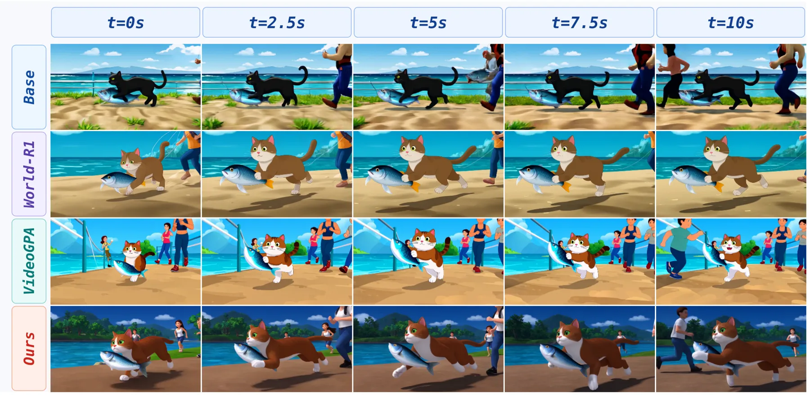
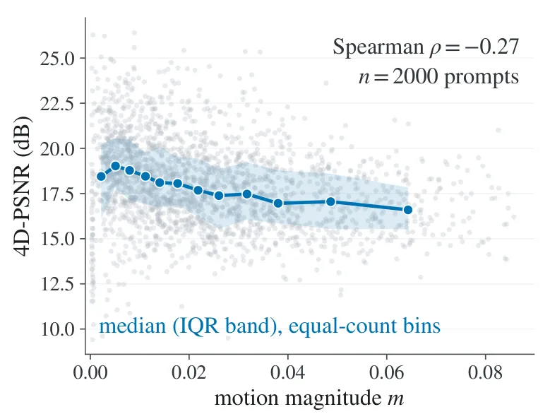
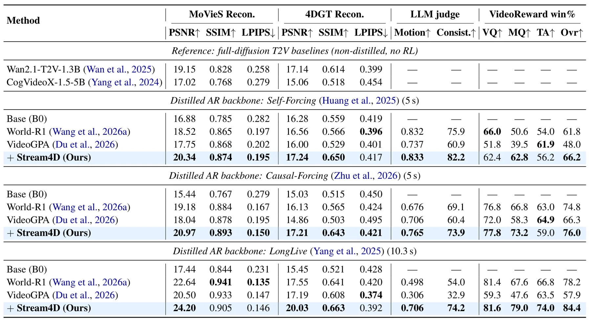
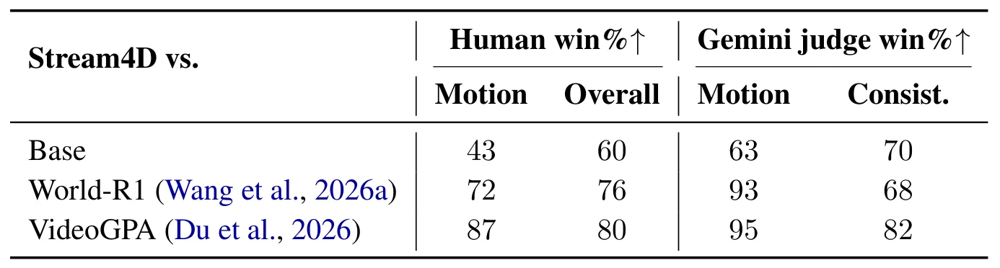
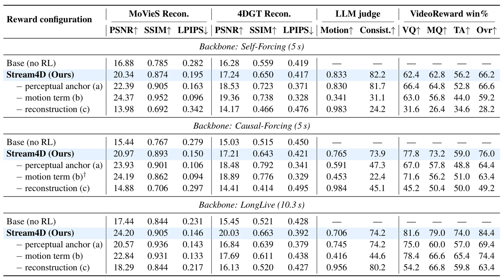

Stream4D：流式自回归扩散视频模型的 4D 一致性Stream4D: 4D-Consistency for Streaming Autoregressive Diffusion Video Models
对动态场景 4D 表示和 Gaussian/重建质量评价有边界参考价值；但主要贡献是视频生成训练奖励，不是 SLAM、定位或可度量重建系统。
一句话工作总结
用动态 4D 重建奖励和运动先验评估视频生成，避免静态 3D critic 把真实运动误判为重建误差。
摘要
Stream4D 针对长时程流式自回归扩散视频中的几何漂移和运动冻结问题，使用前馈 4D 重建奖励替代会惩罚真实物体运动的静态 3D 重建 critic，并加入约束运动幅度、抑制抖动和非刚性伪影的运动先验。最终目标将 4D 重建一致性、运动先验和轻量感知锚点结合，以提升不同视频生成骨干和生成时长下的动态场景质量。
Streaming autoregressive diffusion models enable real-time, long-horizon video generation, but their training objectives optimize local frame prediction rather than the geometry and dynamics of a coherent world: long rollouts accumulate geometric drift and degrade into static or unnatural motion. Recent bidirectional approaches address this problem using rewards signals built upon 3D Gaussian-Splatting reconstruction. However, a single rigid 3d reconstruction cannot model a dynamic scene, so this critic penalizes genuine object motion as reconstruction error and is maximized by freezing the video. This shortcut is especially detrimental in the AR setting, where each chunk can propagate an already-static configuration. In this work, we propose Stream4D, which replaces the static critic with a feed-forward 4D reconstruction reward that explicitly models scene dynamics, allowing coherent motion to receive high consistency rewards. To further guide motion magnitude and quality, we add a motion prior that rewards natural scene-flow magnitude while penalizing jitter and non-rigid artifacts. Our final recipe combines these two terms with a lightweight perceptual anchor. Across various autoregressive video backbones and various generation horizons, Stream4D improves 4D reconstruction quality, preserves motion more effectively, and achieves higher human-aligned preference. Project page: https://banyuanhao.github.io/Stream4D/
中文解读摘录
- 论文：arXiv:2608.19556 · PDF
- 作者：Yuanhao Ban, Jiaqi Feng, Hengguang Zhou, Xiaohuan Pei, Justin Cui, Cho-Jui Hsieh
- 核心方法：用动态 4D 重建奖励替代静态 3DGS critic，避免真实物体运动被误判为重建误差；另加运动幅度、抖动和非刚性伪影先验，并与轻量感知锚点组合。
- 判断：对动态场景 4D 表示和重建质量评价有边界参考意义，尤其提醒静态重建指标在动态世界中的失真。但它主要服务视频生成训练，不是在线定位或可度量 SLAM 系统。
- 评分：6.2/10。
图表/页面预览
{kind=link}

{kind=link}

{kind=link}

{kind=link}

{kind=link}
